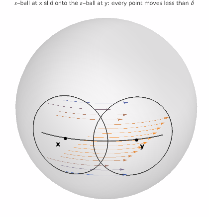
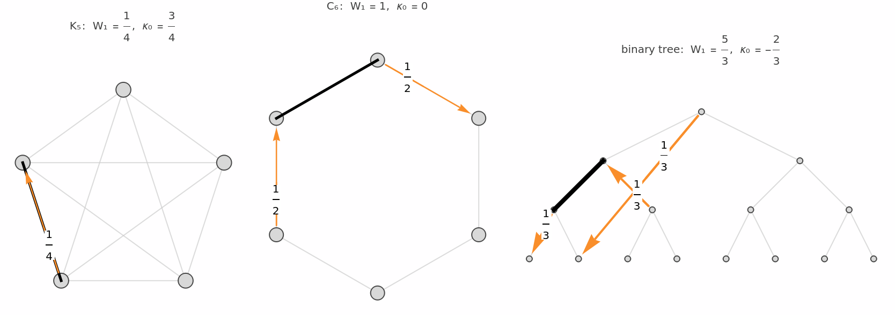
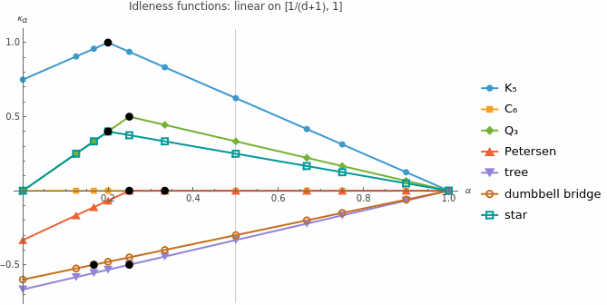
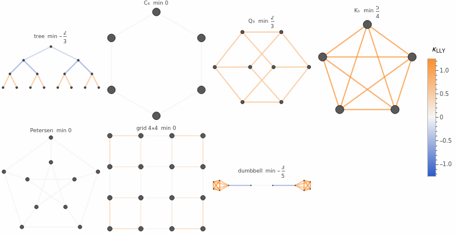
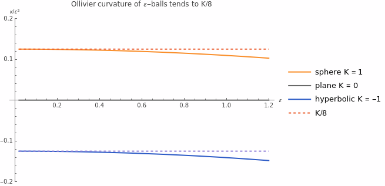

23 November 2026 · Computational Classnotes · Curvature from the
Laplacian, write-up 7
Positive curvature brings averages together. Ollivier’s curvature
measures exactly that: κ(x, y) = 1 −
W₁(,
)/d(x,
y), how much closer two averaging measures are than their centres. It
needs only a distance and an averaging rule, so the same definition
works on graphs and on manifolds, and on a surface with ε-balls it gives
back the Gauss curvature as κ ≈ Kε²/8. This write-up states and explains
each part; the notebook notebooks/series/07-Ollivier.nb
proves each one on examples, with the same section numbers.
Scope and conventions
Distances. On graphs d is the shortest-path
distance; on surfaces, geodesic distance.
Averaging.
(x)
is the α-lazy simple random walk: mass α stays at x, and 1 − α is spread
evenly over the neighbours.
is the curvature it gives; κ₀ is the non-lazy one.
Laplacian. Δf(v) = (mean of f over the neighbours
of v) − f(v), the random-walk normalisation, as in the rest of the
series.
Numbering. Sections 2–10 here match notebook
Sections 2–10; notebook Section 1 is the toolkit. Every number quoted
below was returned by the Wolfram kernel.
Repository.
https://github.com/lossofgenerality/laplacian · Lab bench: Ollivier
on manifolds.
At a glance
On a sphere, a ball slid along a geodesic lands with every
point moving less than the centres: κ > 0.

3D: drag to rotate
Fig. 1
Fig. 1. The ε-ball at x on the unit sphere slid by a
rotation onto the ε-ball at y. A point at distance λ from the geodesic
travels δ cos λ, not δ. Averaging cos λ over the ball gives the
curvature (§8, Fig. 5).
2. Positive
curvature brings averages together
On a round sphere, geodesics leaving nearby points in parallel bend
towards each other. So a small ball around x, slid to a nearby point y,
needs less transport than the distance between the centres. On a plane
every point travels exactly d(x, y). On a saddle, points off the
geodesic travel more.
Ollivier turned this into a definition that needs no derivatives:
curvature is how much closer the two averaging measures are than their
centres.
3. Definition
Give each point x a probability measure
.
The Wasserstein-1 distance is the least average distance needed to move
one measure onto another:
Ollivier’s curvature of a pair x ≠ y is
Kantorovich–Rubinstein duality gives the same W₁ as a maximum over
1-Lipschitz test functions:
So a transport plan bounds W₁ above (κ below), and a 1-Lipschitz
function bounds W₁ below (κ above). When the two meet, the value is
proved.
Checked (notebook §3): primal and dual linear
programs agree on five edges — C₆ 1 = 1, K₅ 1/4 = 1/4, binary tree 5/3 =
5/3, Petersen 4/3 = 4/3, cube Q₃ 1 = 1.
4. Worked by hand
Complete graph Kₙ. The walks at adjacent x and y
share the n − 2 common neighbours, each with mass 1/(n − 1). Only the
mass on y must move to x, a distance 1. The test function f = 1 at y, 0
elsewhere gives the same 1/(n − 1), so
Long cycles are flat. On Cₙ with n ≥ 4, take x = 1,
y = 2. Move the ½ on 0 to 1 and the ½ on 2 to 3: W₁ ≤ 1. The function f
= 1 on {0, 2}, 0 elsewhere, gives exactly 1. So κ₀(Cₙ) = 0, and κ₀(C₃) =
½.
Trees spread out. On an interior edge of the binary
tree (both degrees 3), one optimal plan moves ⅓ a distance 1, another ⅓
a distance 1, and the last ⅓ across the edge a distance 3:

Fig. 2
Fig. 2. Optimal transport plans on K₅, C₆ and the
binary tree. The edge is black; orange arrows are the mass moved,
labelled by amount.
Checked (notebook §4): κ₀(Kₙ) = 1/2, 2/3, 3/4, 4/5,
5/6 for n = 3…7, equal to (n − 2)/(n − 1); κ₀(Cₙ) = 1/2, 0, 0, 0, 0, 0
for n = 3…8; tree edge (2, 4): κ₀ = −2/3 with plan {1→9: ⅓, 4→8: ⅓, 5→2:
⅓}.
5. Laziness and the
Lin–Lu–Yau curvature
The non-lazy walk misreads bipartite graphs. On the cube Q₃ the walk
at x lives on odd vertices and the walk at y on even ones, so every unit
of mass must move and κ₀ = 0. Laziness repairs this.
The idleness function α ↦
(x,
y) is concave and piecewise linear. On
[1/(max{,
}
+ 1), 1] it is linear and vanishes at α = 1 (Bourne, Cushing, Liu, Münch
and Peyerimhoff). Lin, Lu and Yau defined
= lim
/(1
− α) as α → 1, so for every α in that interval
Münch and Wojciechowski removed the limit. The Lin–Lu–Yau curvature
is a formula in the graph Laplacian:

Fig. 3
Fig. 3. Idleness functions on seven edges. Each one
is linear from the black dot at α = 1/(d + 1) to zero at α = 1. K₅ peaks
at κ = 1 exactly there.
Checked (notebook §5): on seven edges
/(1
− α) takes one value for every α ≥ 1/(d + 1), and it equals the
Laplacian formula — K₅ 5/4, C₆ 0, Q₃ 2/3, Petersen 0, binary tree −2/3,
dumbbell bridge −3/5, star K₁,₄ 1/2.
6. A gallery of graphs

Fig. 4
Fig. 4. Seven graphs with every edge coloured by
.
Complete graphs and cubes are positive. Cycles and grid interiors are
flat, while grid boundary edges are positive. Trees and the dumbbell’s
bridge path are negative; the bridge is the most negative part of its
graph.
7. What a lower bound on κ
buys
Local to global. On a graph it is enough to bound κ
on edges. W₁ is a metric, so the triangle inequality adds up along a
geodesic (Ollivier, Proposition 19).
Bonnet–Myers. If
≥ k > 0 on every edge, the graph is finite and
Lichnerowicz. Under the same hypothesis, the first
non-zero eigenvalue of the normalised Laplacian satisfies
and Ollivier proves the same with his κ (Corollary 30).
The cube is extremal for both. Ollivier’s own example is the lazy
walk on {0, 1}ᴺ, with κ = 1/N on neighbours.
Checked (notebook §7):
Local to global: on Q₃ with the ½-lazy walk, pairs
at distance 1, 2 and 3 all have
= 1/3.
Diameter: K₅ has k = 5/4 and diam 1 ≤ 8/5. Q₃ has k
= 2/3 and diam 3 = 3, equality. The star has k = 1/2 and diam 2 ≤ 4;
K₃,₃ has k = 2/3 and diam 2 ≤ 3.
Spectral gap: K₅ λ₁ = 1.25 =
and Q₃ λ₁ = 0.6667 =
,
both equality; the star has λ₁ = 1 ≥ 1/2.
8. Back on a surface: κ ≈ Kε²/8
Let
be the uniform measure on the geodesic ε-ball around x, on a surface of
constant curvature K, and let y lie a small distance δ along a geodesic.
Slide the ball along the geodesic. The Jacobi equation J″ + KJ = 0 says
a point at signed distance λ from the geodesic is displaced by δ cos(√K
λ) + o(δ). Averaging over the ball,
On a flat disc of radius ε, 𝔼[λ²] = ε²/4, so κ ≈ Kε²/8. Ollivier
shows the sliding coupling is optimal at this order (Example 7). In
dimension N the same computation gives
In polar coordinates (ρ, α) at x, spherical trigonometry gives sin(√K
λ) = sin(√K ρ) sin α, so the sliding value is an exact integral. Its
series, for any K, is
The ε⁴ and higher terms belong to this coupling: they bound κ from
below but are not claimed to be the exact W₁.

Fig. 5
Fig. 5. κ/ε² against ε for the sphere (K = 1), the
plane and the hyperbolic plane (K = −1), tending to K/8.
Checked (notebook §8):
𝔼[λ²] = ε²/4 exactly.
The series above, symbolic in K.
On the unit 3-sphere (Ric = 2): ε²/5 − 2ε⁴/75, whose leading term is
ε²·2/(2·5).
Series and quadrature agree at ε = 0.3 to 3 × 10⁻⁸.
9. Exercises
Show by a plan and a test function that κ₀ = 0 on every edge of
K₃,₃.
Compute
on an edge of C₄ and of C₅. (1/2 and 1/4.)
A tree edge with degrees
,
has
=
2/
+
2/
− 2. Check the star K₁,₄ and both kinds of binary-tree edge. (1/2;
−2/3 interior, 2/3 at a leaf.)
Show
= 2/n on the hypercube Qₙ, so the diameter bound is attained for every
n.
Prove 𝔼[λ²] = ε²/4 on a flat disc and deduce K/8.
Checked (notebook §9): κ₀(K₃,₃) = 0;
(C₄)
= 1/2 and
(C₅)
= 1/4; the tree formula holds on all three edges;
(Qₙ)
= 1, 2/3, 1/2, 2/5 with diam = 2, 3, 4, 5 for n = 2…5.
Verified results
Graph and edge
κ₀
λ₁
diam
K₅
3/4
5/8
5/4
1.25
1
C₆
0
0
0
0.5
3
Q₃
0
1/3
2/3
0.667
3
Petersen, edge {1, 3}
−1/3
0
0
0.667
2
Binary tree, interior edge
−2/3
−1/3
−2/3
0.057
6
Dumbbell, bridge {5, 6}
−3/5
−3/10
−3/5
0.029
5
Star K₁,₄
0
1/4
1/2
1
2
In every row
=
2.
Where
> 0 the spectral bound holds (K₅ and Q₃ with equality), and Q₃ meets
the diameter bound
2/
= 3.
References
Every item below was opened (abstract or full text) on 23 November
2026; the notes say what each contributes to this write-up.
1. The definition: Ollivier
Y. Ollivier, Ricci curvature of metric spaces, C. R. Math.
Acad. Sci. Paris 345 (2007), no. 11, 643–646. doi:10.1016/j.crma.2007.10.041.
The short announcement of the definition.
Y. Ollivier, Ricci curvature of Markov chains on metric
spaces, J. Funct. Anal. 256 (2009), no. 3, 810–864. doi:10.1016/j.jfa.2008.11.001,
arXiv:math/0701886. The
main paper: Example 7 (ε-balls, §8 here), Example 8 (cube), Proposition
19 (local to global), Proposition 23 (diameter), Corollary 30 (spectral
gap).
Y. Ollivier, A survey of Ricci curvature for metric spaces and
Markov chains, in Probabilistic Approach to Geometry, Adv.
Stud. Pure Math. 57 (2010), 343–381. Project
Euclid. Background, the classical theorems it generalises, and a
list of open problems.
A. Joulin, Y. Ollivier, Curvature, concentration and error
estimates for Markov chain Monte Carlo, Ann. Probab. 38 (2010), no.
6, 2418–2442. doi:10.1214/10-AOP541, arXiv:0904.1312. Positive
curvature gives explicit error bars for Monte Carlo averages; on finite
graphs it is contraction under path coupling.
Y. Ollivier, C. Villani, A curved Brunn–Minkowski inequality on
the discrete hypercube, or: what is the Ricci curvature of the discrete
hypercube?, SIAM J. Discrete Math. 26 (2012), 983–996. Cited from
the reference list of Bourne et al. (below); not opened.
2. Graphs: Lin–Yau, Lin–Lu–Yau and laziness
Y. Lin, S.-T. Yau, Ricci curvature and eigenvalue estimate on
locally finite graphs, Math. Res. Lett. 17 (2010), no. 2, 343–356.
doi:10.4310/MRL.2010.v17.n2.a13.
First use of Ollivier’s curvature on graphs; Bochner-type inequalities
and eigenvalue bounds.
Y. Lin, L. Lu, S.-T. Yau, Ricci curvature of graphs, Tohoku
Math. J. (2) 63 (2011), no. 4, 605–627. doi:10.2748/tmj/1325886283.
The lazy-limit curvature κLLY (§5 here); products, random
graphs, discrete Bonnet–Myers.
D. P. Bourne, D. Cushing, S. Liu, F. Münch, N. Peyerimhoff,
Ollivier–Ricci idleness functions of graphs, SIAM J. Discrete
Math. 32 (2018), no. 2, 1408–1424. arXiv:1704.04398.
κα is concave and piecewise linear in the idleness α, linear
on [1/(d+1), 1] (§5 here).
F. Münch, R. K. Wojciechowski, Ollivier Ricci curvature for
general graph Laplacians: heat equation, Laplacian comparison,
non-explosion and diameter bounds, Adv. Math. 356 (2019), 106759.
arXiv:1712.00875. Theorem
2.1, the limit-free formula used in the notebook.
3. Combinatorial bounds and exact formulas
J. Jost, S. Liu, Ollivier’s Ricci curvature, local clustering
and curvature-dimension inequalities on graphs, Discrete Comput.
Geom. 51 (2014), no. 2, 300–322. doi:10.1007/s00454-013-9558-1,
arXiv:1103.4037. Upper and
lower bounds through triangles (the local clustering coefficient), sharp
on Kₙ.
B. B. Bhattacharya, S. Mukherjee, Exact and asymptotic results
on coarse Ricci curvature of graphs, Discrete Math. 338 (2015), no.
1, 23–42. doi:10.1016/j.disc.2014.08.012,
arXiv:1306.6741. Formulas
for bipartite graphs and girth ≥ 5, and random graphs G(n, p).
Caution: see Kelly, next.
C. Kelly, Exact expressions and reduced linear programmes for
the Ollivier curvature in graphs. arXiv:1909.12156.
Counterexamples to the Bhattacharya–Mukherjee formulas, the error
located, and reduced linear programmes in their place.
S.-H. Paeng, Volume and diameter of a graph and Ollivier’s Ricci
curvature (2012). MaRDI record.
Diameter and volume bounds for finite graphs from positive
curvature.
4. Spectrum and diameter
F. Bauer, J. Jost, S. Liu, Ollivier–Ricci curvature and the
spectrum of the normalized graph Laplace operator, Math. Res. Lett.
19 (2012), no. 6, 1185–1205. arXiv:1105.3803. Sharpens
Ollivier’s k ≤ λ₁ ≤ … ≤ λN−1 ≤ 2 − k by using neighbourhood
graphs.
D. Cushing, S. Kamtue, J. Koolen, S. Liu, F. Münch, N. Peyerimhoff,
Rigidity of the Bonnet–Myers inequality for graphs with respect to
Ollivier Ricci curvature, Adv. Math. 369 (2020), 107188. Cited from
a reference list; not opened. Which graphs attain the diameter
bound.
X. Huang, S. Liu, Q. Xia, Bounding the diameter and eigenvalues
of amply regular graphs via Lin–Lu–Yau curvature. arXiv:2210.02988. Theorem
1.2: discrete Bonnet–Myers and the Lichnerowicz estimate (§7 here).
F. Münch, Reflective graphs, Ollivier curvature, effective
diameter, and rigidity. arXiv:2205.15857. A
Bonnet–Myers bound for the effective diameter, with the graphs that
attain it.
5. Back to manifolds
P. van der Hoorn, W. J. Cunningham, G. Lippner, C. Trugenberger, D.
Krioukov, Ollivier–Ricci curvature convergence in random geometric
graphs, Phys. Rev. Research 3 (2021), 013211. arXiv:2008.01209. Ollivier
curvature of random geometric graphs converges to the Ricci curvature of
the manifold.
P. van der Hoorn, G. Lippner, C. Trugenberger, D. Krioukov,
Ollivier curvature of random geometric graphs converges to Ricci
curvature of their Riemannian manifolds, Discrete Comput. Geom. 70
(2023), 671–712. doi:10.1007/s00454-023-00507-y,
arXiv:2009.04306. The
full proofs. This is the rigorous version of the sampled estimate this
write-up tried and dropped (it needs mesoscopic neighbourhoods).
6. Optimal transport and synthetic Ricci
curvature
C. Villani, Optimal Transport: Old and New, Grundlehren der
mathematischen Wissenschaften 338, Springer, 2009. doi:10.1007/978-3-540-71050-9.
The W₁ distance, Kantorovich duality (§3 here), and transport and Ricci
curvature.
J. Lott, C. Villani, Ricci curvature for metric-measure spaces
via optimal transport, Ann. of Math. (2) 169 (2009), no. 3,
903–991. doi:10.4007/annals.2009.169.903.
The other transport route to Ricci curvature (through entropy), for
comparison.
R. Sandhu, T. Georgiou, E. Reznik, L. Zhu, I. Kolesov, Y.
Senbabaoglu, A. Tannenbaum, Graph curvature for differentiating
cancer networks, Sci. Rep. 5 (2015), 12323. doi:10.1038/srep12323.
Cancer gene networks show higher Ollivier curvature than normal
ones.
A. Samal, R. P. Sreejith, J. Gu, S. Liu, E. Saucan, J. Jost,
Comparative analysis of two discretizations of Ricci curvature for
complex networks, Sci. Rep. 8 (2018), 8650. doi:10.1038/s41598-018-27001-3.
Ollivier and Forman curvature are highly correlated on many networks
(link to the Forman write-up, 10).
J. Topping, F. Di Giovanni, B. P. Chamberlain, X. Dong, M. M.
Bronstein, Understanding over-squashing and bottlenecks on graphs
via curvature, ICLR 2022. arXiv:2111.14522. Negatively
curved edges cause over-squashing in graph neural networks; the paper
uses its own balanced Forman curvature, motivated by the Ollivier
picture.